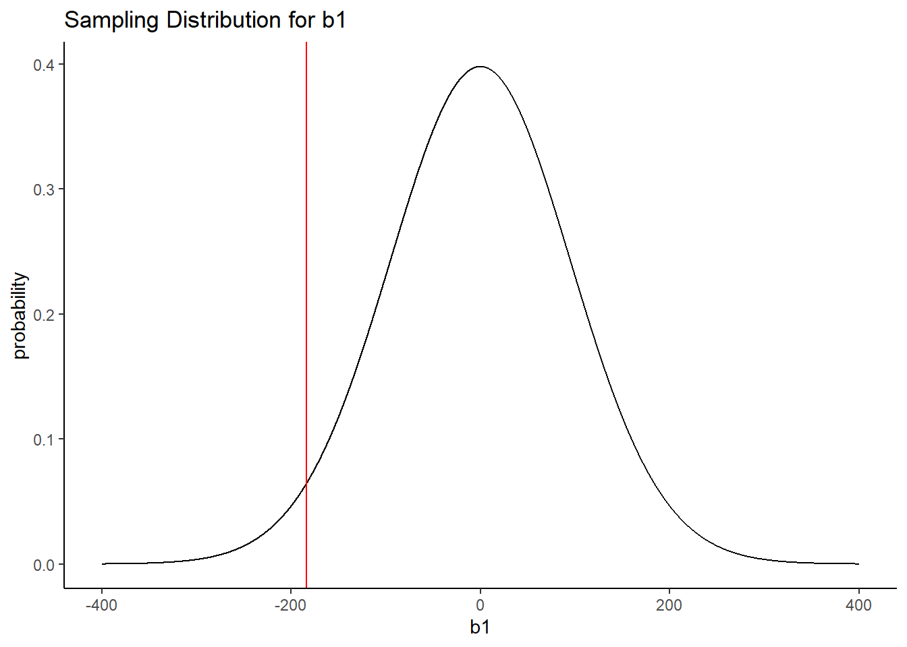
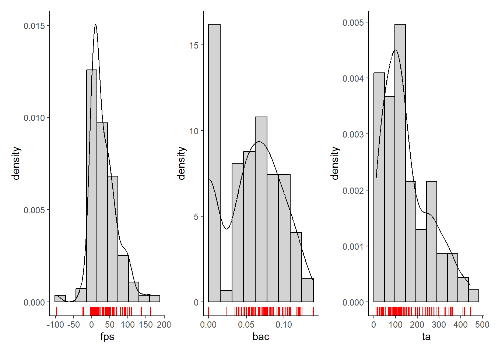
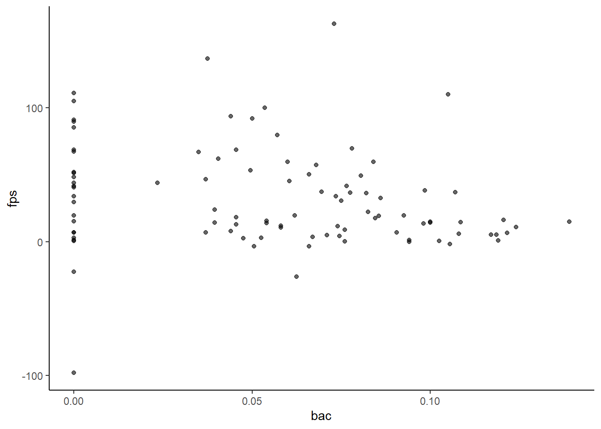
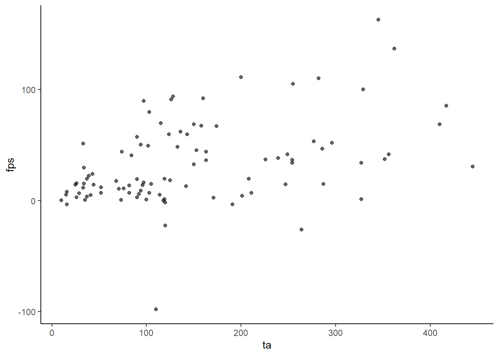
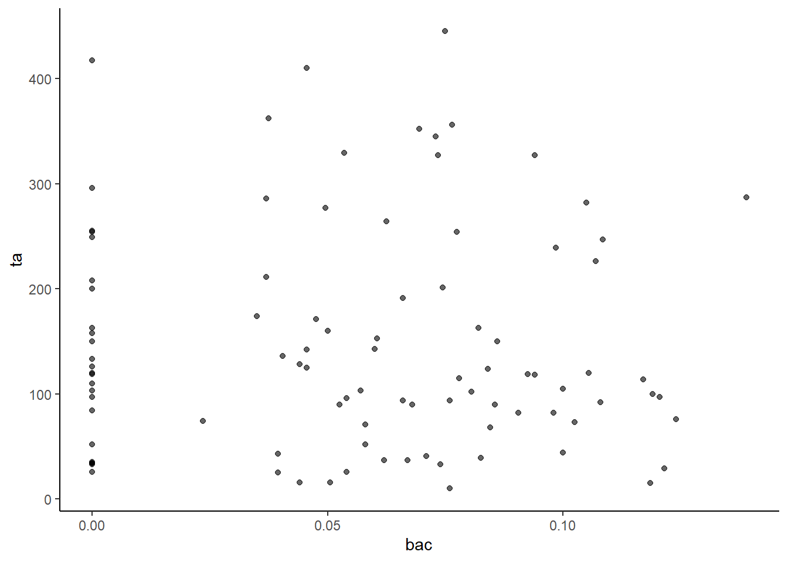
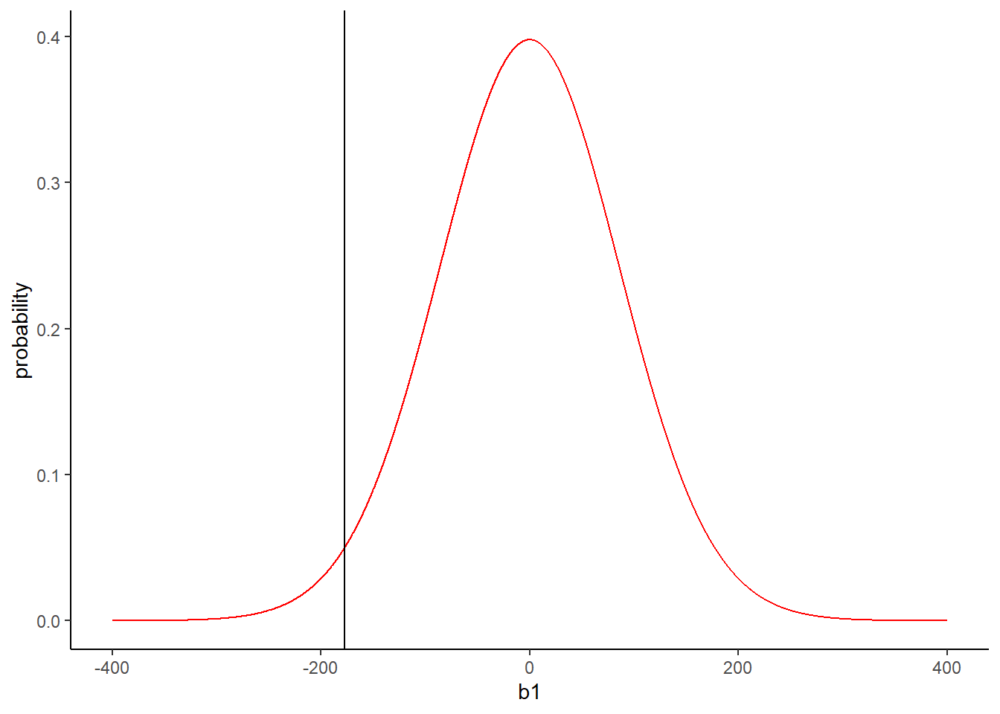

6Inferences about two predictors (multiple regression without interaction)
6.1 Multiple Regression 2+ Predictors
Consider how the concepts we have discussed so far generalize to the 2 predictor (3 parameter) model.
We will start with 2 quantitative predictors example. Will continue with 1 quantitative and 1 dichotomous predictor example.
Learn how to quantify, test, and interpret ‘partial’ effects:
\(b_j\)
\(\Delta R^2, \eta_p^2\)
Multicollinearity
Text, table and figure descriptions of results
Generalization to >2 predictors is straightforward (Unit 7).
6.2 Benefits of Multiple Predictors
Statistical power: Goal is to increase power to test focal predictor’s effect on DV by adding it to model that contains additional known predictors of DV.
Additional explanatory power: Goal is to demonstrate that focal predictor adds explanatory power above and beyond other predictor(s) [Unique effect controlling for other predictors].
Efficiency: Can test focal effects of two predictors in one study (each benefiting from increased power per point 1).
Mediation: We have identified a known cause of a DV. We add a new focal predictor to test if the effect of our known causal IV on the DV is mediated by our focal predictor (i.e., identify “mechanism” of IV effect).
Describe the interpretation of \(b_1\) (coefficient for BAC) and its significance test.
\(b_1\)describes the relationship between BAC and FPS in the units of each measure. FPS will decrease by 184 µV for every 1% increase in BAC (It will decrease by 1.84µV for every .01 increase in BAC).
The significance test for \(\beta_1\) tests the null hypothesis that the population relationship between BAC and FPS is 0 (i.e., \(\beta_1\) = 0, no relationship). We fail to reject this \(H_0\). Conclude that alcohol does not affect FPS.
Question: What could we change about the sampling distribution that would make this \(b_1\) be less probable given \(H_0\) so that we reject the Null?
Code
tibble(b1 =seq(-400,400,.01),probability =dt(b1/subset(broom::tidy(m_2), term =="bac")$std.error, m_2$df.residual)) |>ggplot(aes(x = b1, y = probability)) +geom_line() +geom_vline(xintercept =subset(broom::tidy(m_2), term =="bac")$estimate, color ="red") +labs(title ="Sampling Distribution for b1")

If the standard deviation of the sampling distribution (its standard error) was smaller so that the distribution was narrower, \(b_1\) would be less probable given \(H_0\).
6.6 Standard Errors of GLM Coefficients
The formula for the standard error for a coefficient \(b_j\) in multiple (more than one predictor) regression is:
\(R^2_j\) = variance in \(X_j\) accounted for by all other predictors in the model (i.e., how redundant is \(X_{a_j}\) in model?). Literally, predict \(X_j\) as DV with all other predictors as IVs.
Note: Formula for the standard error for \(b_0\) is different.
For the one predictor model it is (need matrix notation for \(k>1\)):
Question: What can we do analytically to decrease SSE (increase model \(R^2\))?
Include another predictor (covariate) in the model that accounts for additional variance in \(Y\) (reduces SSE).
Ideally, this covariate should be orthogonal (uncorrelated) with the other predictor (BAC).
In this experiment, I could have measured another predictor of stress response, Trait Anxiety (TA). TA might be expected to be a robust predictor of FPS. It also should be uncorrelated with BAC because I manipulated BAC.
plot_fps <- data |>ggplot(aes(x = fps)) +geom_histogram(aes(y =after_stat(density)),color ="black", fill ="light grey", bins =10) +geom_density() +scale_x_continuous(breaks =c(-100, -50, 0, 50, 100, 150, 200)) +geom_rug(color ="red")plot_bac <- data |>ggplot(aes(x = bac)) +geom_histogram(aes(y =after_stat(density)), boundary =0,color ="black", fill ="light grey", bins =10) +geom_density() +geom_rug(color ="red")plot_ta <- data |>ggplot(aes(x = ta)) +geom_histogram(aes(y =after_stat(density)), boundary =0, color ="black", fill ="light grey", bins =10) +geom_density() +geom_rug(color ="red")
Code
plot_fps + plot_bac + plot_ta

Code
data |>select(where(is.numeric)) |> psych::corr.test()
Call:psych::corr.test(x = select(data, where(is.numeric)))
Correlation matrix
bac ta fps
bac 1.00 -0.02 -0.19
ta -0.02 1.00 0.44
fps -0.19 0.44 1.00
Sample Size
[1] 96
Probability values (Entries above the diagonal are adjusted for multiple tests.)
bac ta fps
bac 0.00 0.87 0.12
ta 0.87 0.00 0.00
fps 0.06 0.00 0.00
To see confidence intervals of the correlations, print with the short=FALSE option
Code
data |>ggplot(aes(x = bac, y = fps)) +geom_point(alpha = .6)

Code
data |>ggplot(aes(x = ta, y = fps)) +geom_point(alpha = .6)

Code
data |>ggplot(aes(x = bac, y = ta)) +geom_point(alpha = .6)

6.11 The Two Predictor and General Linear Models
DATA = MODEL + ERROR
Two Predictor Model for Sample Data
\(Y_i=b_0+b_1X_1+b_2X_2+e_i\)
\(\hat{Y_i}=b_0+b_1X_1+b_2X_2\)
\(k\) Predictor Model for Sample Data
\(Y_i=b_0+b_1X_1+...+b_kX_k+e_i\)
\(\hat{Y_i}=b_0+b_1X_1+...+b_kX_k\)
6.12 Testing BAC in a Three Parameter Model (2 Predictors)
Code
m_3 <-lm(fps ~ bac + ta, data = data)m_3 |> broom::tidy()
Question: What parameter estimate is used to test our research question about the effect of BAC? What are our \(H_0\) and \(H_a\) for the associated population parameter?
We use \(b_1\) (-177) to test our hypothesis about the population effect of BAC (\(\beta_1\)).
Describe conclusion and logic of the test of \(H_0:\beta_1=0\) from sampling distribution perspective.
If \(H_0\) is true, we expect a sampling distribution for \(b_1\) to have a mean of 0 and an SE of 86.6 (red curve below).
Code
tibble(b1 =seq(-400,400,.01),probability =dt(b1/subset(broom::tidy(m_3), term =="bac")$std.error, m_3$df.residual)) |>ggplot(aes(x = b1, y = probability)) +geom_line(color ="red") +geom_vline(xintercept =subset(broom::tidy(m_3), term =="bac")$estimate, color ="black")

A sample \(b_1\) = -177.0 is unlikely (about 2 standard deviations below mean; p = .0437). Therefore, we reject our \(H_0\) and conclude that \(\beta_1 \neq 0\).
Conclusion is that BAC affects FPS.
Describe conclusion and logic of the test of \(H_0:\beta_1=0\) from model comparison perspective.
Decreased \(\text{SSE}_a\) in three parameter model. Flip side of increased model \(R^2\).
\(F(P_a - P_c, N - P_a) = \frac{(\text{SSE}_c = \text{SSE}_a)/(P_a-P_c)}{\text{SSE}_a/(N-P_a)}\)
Impact of \(N\) on \(P_a\) also clear.
Impact of \(s_y\) and \(s_{x_j}\) and multicollinearity less clear in formula.
Connection to precision of parameter estimation less clear in formula.
6.18\(R^2_j\) and Multicollinearity
\(t(N-P) = \frac{b-0}{\text{SE}_b}\)
\(\text{CI}_b= b \pm t(\alpha; N-P)*\text{SE}_b\)
This decrease in power and precision for model parameter estimates (regression coefficients) associated with redundancy among the predictors is called the problem of Multicollinearity.
It is not sufficient to examine only bivariate correlations among predictors. To determine if a problem exists, calculate Variance Inflation Factors (VIF) for each predictor.
\(\text{VIF}_j = \frac{1}{(1-R^2_j)}\)
VIF tells you how much \(\text{SE}_{b_j}\) is increased because of redundancy. VIFs \(\ge\) 5 are considered problematic (SE increased by factor of 2.2).
We can use car::vif() to calculate VIFs in R.
Code
car::vif(m_3)
bac ta
1.000296 1.000296
SPSS users may be more familiar with Tolerance (\(X_i= 1- R^2_j\)). As tolerance decreases toward 0, Multicollinearity increases.
Solutions for Multicollinearity include:
Drop redundant variable.
Factor analysis (e.g., PCA) to produce factors that reflect major sources of variance among the redundant predictors.
This is only a problem for the variables in the model with high VIFs. If you don’t care about testing them, this is not a problem. Generally, you only care about VIFs for your focal variable(s).
6.19 Interpretation of Multiple Regression Coefficients
Question: What did the value of \(b_1\) tell us in a regression model with one predictor?
The change in \(Y\) associated with a one unit increase in \(X_1\).
For every 1 unit increase in \(X_1\), there will be a \(b_1\) unit increase in \(Y\).
Question: What about \(b_j\) with multiple (e.g., 2) predictors?
The change in \(Y\) associated with a one unit increase in \(X_j\)controlling for all other predictors in the model. “Controlling for” means holding constant.
For every 1 unit increase in \(X_j\), there will be a \(b_j\) unit increase in \(Y\) holding all other predictors in the model constant.
Question: Do hours of studying per week affect exam performance in 610?
Code
data <-read_csv(here::here(path_data, "6_two_predictors_exam.csv"), show_col_types =FALSE) data <- data |>mutate(study_hours_c = study_hours -mean(study_hours)) |>glimpse()
Maybe study hours are related to exam scores only because intelligent students study more (learned early good study habits) and intelligent students do better on exams.
Question: How could you assess the unique effect of study_hours, controlling for IQ?
Code
data |>select(study_hours, iq, exam) |>cor() |>round(2)
study_hours iq exam
study_hours 1.0 0.50 0.40
iq 0.5 1.00 0.54
exam 0.4 0.54 1.00
Model exam scores as a function of both study_hours and IQ. \(b_1\) (effect of study hours) in this model is the unique effect of study_hours, controlling for IQ.
Code
m_exam_2 <-lm(exam ~ study_hours_c + iq, data = data)broom::tidy(m_exam_2)